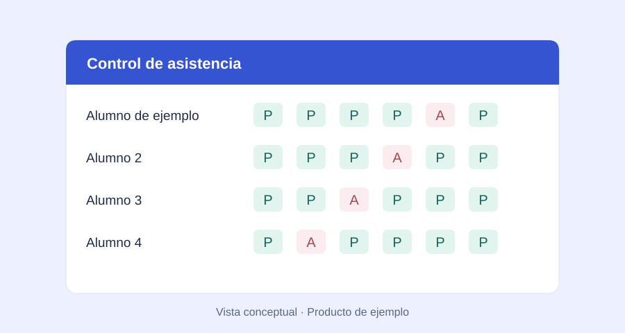
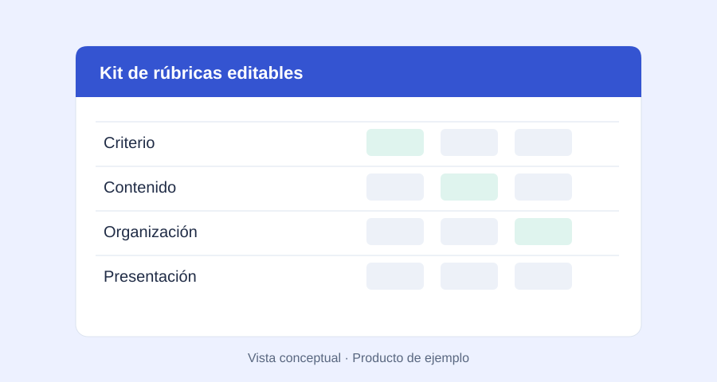
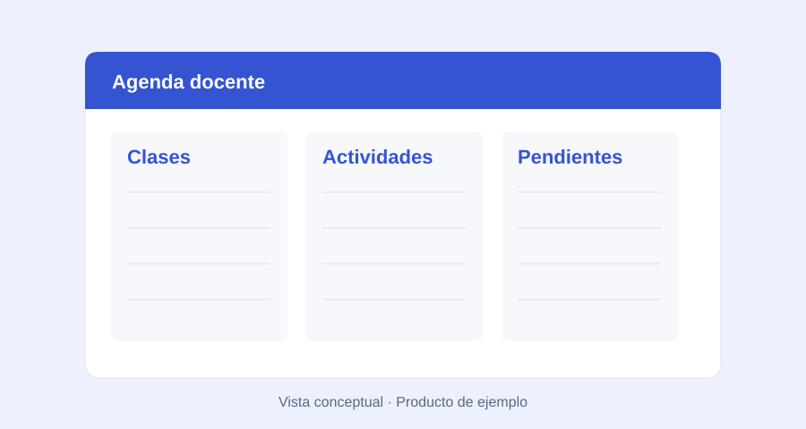

Agendas y planeación
Generadores de agendas y planeaciones para organizar clases, contenidos y actividades.
ASR Educa surge de las necesidades que aparecen cada día en el aula y en la coordinación escolar: organizar información, dar seguimiento al aprendizaje, preparar materiales y comunicar resultados con claridad.
Buscamos transformar esa experiencia en recursos prácticos para docentes, coordinadores y directores de primaria, secundaria y preparatoria, con una presentación clara y una explicación de cómo utilizarlos.
El proyecto reúne cuatro áreas: Soluciones para docentes, Recursos para coordinadores, Recursos para directores y Materiales exclusivos SEA, para las necesidades de los colegios del Sistema Educativo Adventista.
Estas son las líneas que queremos desarrollar. El catálogo actual es una muestra; integraremos los productos reales de manera gradual.
Generadores de agendas y planeaciones para organizar clases, contenidos y actividades.
Instrumentos de captura de calificaciones, concentrados y generadores de boletas.
Generadores para personalizar credenciales con los datos y la identidad de cada colegio.
Listas automatizadas y herramientas para acompañar la asistencia y el progreso de los grupos.
Materiales editables para valorar proyectos, registrar evidencias y ofrecer retroalimentación.
Tutoriales y recursos para aprender a utilizar las herramientas e incorporar nuevas soluciones.
Cada ficha indicará el nivel, el formato, los requisitos y el alcance del material cuando esté disponible.
Docente y coordinador académico
Con formación en pedagogía y teología, y experiencia en docencia y coordinación escolar, Arnulfo conoce de cerca el trabajo que acompaña a la enseñanza: planear, evaluar, organizar y dar seguimiento a los alumnos.
Actualmente cursa estudios de máster en Didáctica de la Historia, Geografía y Ciencias Políticas. Desde ASR Educa busca convertir su experiencia en herramientas útiles y adaptables para otras comunidades educativas.
El proyecto nace de la práctica escolar y se construye escuchando las necesidades de quienes trabajan en el aula y en la coordinación.
Conversemos sobre tu escuelaCuando habilitemos las ventas, conocerás el material en ASR Educa y realizarás el pago en Hotmart.
Revisa su descripción, capturas, tutorial, requisitos, precio y condiciones antes de decidir.
El botón de compra te llevará a la página de pago para revisar tus datos y elegir entre los métodos disponibles para esa oferta.
Después de confirmarse la compra, recibirás la información de acceso en el correo que indiques al pagar.
Los botones actuales son de demostración y no realizan cobros. Antes de vender publicaremos la entrega, licencia, soporte y condiciones de cada producto.
Podrás consultarnos por correo o WhatsApp. Los datos de pago se introducirán en Hotmart; no los solicitaremos por mensajes.
ASR Educa desarrolla sus materiales de forma independiente. La mención de Hotmart describe el proceso de pago previsto; no implica un aval de la plataforma.
Conoce otras propuestas del catálogo.

EjemploUn ejemplo para registrar presentes, ausencias, retardos y justificantes de tu grupo.

EjemploUna propuesta de instrumentos para valorar proyectos y dar retroalimentación.

EjemploUna propuesta para organizar clases, actividades y pendientes del trabajo docente.
Cuéntanos qué tarea te gustaría simplificar.